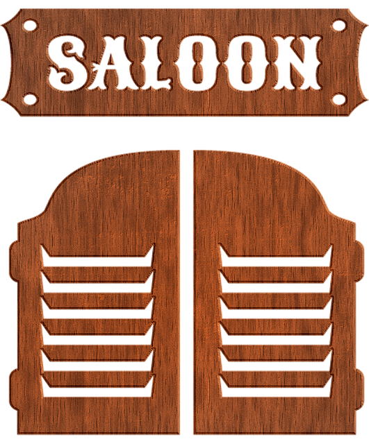
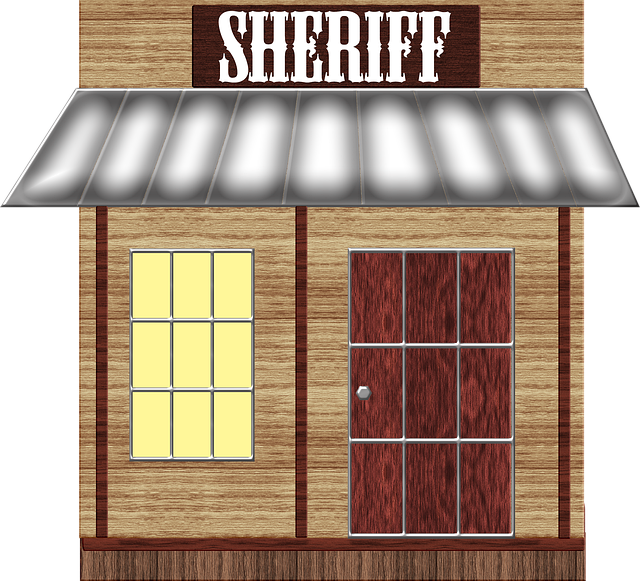

Boris “The Bandit” Ronson was an infamous outlaw
for all the wrong reasons. He was bumbling at best - he was as
bright as rusted iron, he couldn't pour water out of a boot with the
instructions on the heel… But he was your brother and that meant
that when he got into trouble with the law, it was your job to get
him out again.
Rumour has it that Boris had been at an illegal shindig somewhere
down south the night before last. The law had caught wind of it and
had stormed the place, arresting every Tom, Dick and Harry who
hadn’t managed to hightail it out of there and ofcourse, Boris had
been one of the ones who had been as drunk as a skunk, so much so
that he hadn’t even been able to mount his horse and make a getaway.
Hauled down to the Sheriff’s Office
where, if you don’t go sharpish, he’ll swing come the morning!

You haven’t been here for a while but it’s just the way you
remember it - a dusty little town with a generous sized watering
hole at the heart of it called The Cowpoke Saloon. The ride here
had been a long one; your back hurt and quite frankly, you were
parched so you hitched your reliable old horse and went in through
the swing doors into the saloon. Another hour wouldn’t kill Boris…
Hopefully.
Your footsteps are loud on the aged wooden floorboards and your
spurs make a pleasant jingling sound as you walk. It’s enough to
turn the heads of the patrons inside The Cowpoke Saloon, all who
survey this stranger with differing levels of interest and
suspicion. You’ve been around the block enough times as to not let
the stares disconcert you - you walk into the saloon as if you
belong there.
You notice an intriguing looking fellow sitting
at a circular table alone, shuffling a deck of cards with
white-gloved hands. He stands out because he is so well dressed in
comparison to the other day drinkers; he wears a top hat, a baby
blue silk waistcoat with a pocket watch. His eyes which catch
yours for the merset of moments, are a bright emerald green and
his dark moustache is waxed and turned up at the corners with the
utmost precision.
At the bar there is a round-faced barman with
rosy cheeks cleaning glasses idly. He acknowledges you and you
start forwards.
“Hey there handsome, you lookin’ for some company?” A buxom
redhead asks you. She’s standing by a wide wooden
staircase that leads to the upper floor of the saloon. As you look
at her, she has a devilish gleam in her eye.
Talk to...
You smile at the redhead, “depends on who’s asking.” “That’s for
me to know and you to find out,” she replies without missing a
beat. “Now, are you really gonna make a girl beg?” You shake your
head, “of course not.” “That’s what I like to hear, sugar.” She
holds her hand out to you and you accept it as she begins to make
her way up the stairs and you follow. The din from the bar is
quickly left behind you as you find yourself in a hallway lined
with pictures of the town and famous people who had visited the
saloon in years gone by. There’s carpet up here, red and plush
under your boots and your spurs don’t even make a sound now. It
strikes you just how quiet it is. The redhead seems to know
exactly where she’s going and stops before a room: 2b. She’s
finding the key to unlock it but something about all of this has
made you feel uneasy…
She manages to open the door and you step inside the room which
unlike the rest of the upstairs is remarkably bare besides a bed.
You don’t have time to consider this as there’s suddenly a pain in
your back. You whirl around to see that the woman who you had
thought had been fumbling for a key actually holds a knife. It’s
now a bloody knife. Your blood. You fall forward face first onto
the bed and she quickly relieves you of all your money and
valuables. I guess you should never judge a book by it's cover.
You lean against the bar and order a whiskey. “Haven’t seen you
‘round here before.” The barman says as he sets the drink down.
You shrug and slug it in one. “Just passin’ through.” Although you
have enough money on you to drink the bar dry at least twice over,
you really should start thinking about setting dear Boris free…
But one more couldn’t hurt, right?
One whiskey quickly becomes two, three and four and before you know
it, the room is spinning faster than the wheel of a stagecoach. You
manage to stumble outside the back of the saloon and see that
there’s no daylight to be found, it’s dark out now - how long have
you been here?!
You puke onto the floor before staggering blindly forwards,
tripping over something or other - most likely your own feet and
landing flat on your back, looking up at the navy coloured sky
before passing out.
You wake up with a jolt. Someone’s thrown a bucket of cold water
over you and shouted at you to get out of the way. It’s bright
again. People are bustling about their daily business. What time
was it?! How long had you been asleep?!
When you run to the square where they keep the gallows you see
that you’re too late. The hangings for today had been bright and
early and while you had slept in a drunken stupor, your brother
had died.
You go to leave the saloon but the mysterious man at the circular
table calls out to you: “wait one moment! Why don’t you play
a round of cards with me?”
You turn back to face him, “sorry, I ain't got time-”
“Nonsense!” He said, cutting you off, “sit with me, dear boy.”
You go to the table, those dazzling eyes fixed on yours. “Listen,
mister, I got important business to attend to, I’m afraid I don’t
got time for your little card game.”
The man smirked at you in a knowing way, his eyes twinkled,
“you’re here to save your brother from the rope tomorrow.”
Your eyes widened at this, how could he have known that?!
“I think I have some information that could help you in your
endeavour and I’d be prepared to share it with you *if* you play a
game with me.”
With uncertainty, you sit down, “what kind of game?”
“It’s simple, really. I’ll draw a card and all you have to do is
tell me the correct suit. If you get it wrong, you buy me a drink.
If you’re right… Well then, I’ll give you the information that
will help procure your dear brother.” It seems like a scam to
you but if he really did have information that could help you.
You’d rather have it than not.
With his deft, gloved hands, the man shuffles the deck of cards
before you before fanning them out in one graceful movement on the
table. He picks one out seemingly at random and peers at it.
A smirk tugs at the side of his lips.
“All you have to do is pick what suit you think it is.”
"Correct my friend!" He says laughing gleefully, "and now as
thanks for playing this little game with me, I'll impart my
knowledge to you. Sheriff Broad is guardian of your dear, sweet
brother as we so speak, however… it has come to my attention that
he leaves his post every night without fail to visit a Mrs Cahill
who lives the next town over. I have it on good authority that the
Sheriff is gone from 11pm - 3 am…. Before Mr Cahill returns from
his night shift at the railway station, if you catch my
meaning..."
You do indeed.
You thank the mysterious gentleman and leave the saloon. As you do
so, you check your pocket watch and see that it is already 10pm so
you settle outside the bank which is opposite the Sheriffs office
and wait until you see him leave, just like the mysterious
gentleman said he would, at 11pm and not a minute later.

You walk over to the Sheriff’s office and glance through the
window-you can see the cell at the back where you see your brother
propped up against the back wall. However, sitting behind the desk
with his feet up and cleaning his revolver, is the Sherrif’s
Deputy. You hadn’t bet on that and nor had the mysterious
man told you about him! You had half a mind to go back to the
saloon and shove those playing cards where the sun didn’t shine
but that could wait, right now you had to come up with a plan.
You walk into the Sheriff’s office and flash the man a smile that
you hoped was charming but he eyes you with suspicion. He’s
younger than you might have imagined.
“Depty! I’m so glad you’re here!” You say, standing before the
desk. “Why would that be?” He asks, dark beady eyes narrowing.
“Well, you see, that there in the cell behind you is my poor, baby
brother. He ain’t the brightest spark unfortunately and I’m sure
whatever he did to land himself in here is something he’s *very*
sorry about.”
The deputy rolls his eyes as if he’s heard this a thousand times
before and you don’t doubt that. He sets his revolver down on the
desk and taps his fingers impatiently as you continue.
“I was hoping that we could iron out this *misunderstanding*” You
say and you put your hand into your jacket pocket and pull out
around half of the dollar bills you have on you - it’s a good job
you saved them and didn’t spend it all on liquor at the saloon.
You slide them across the desk towards the Deputy.
“Are you tryin’ to bribe me, son?” he asks and you shrug, “I will
have you know that it is an offence to bribe a lawman, you know
that, don’t you?” You’ve been hoping that perhaps the Deputy would
not mind this but it seemed he did as rose to his feet and you
were frogmarched to the cell where Boris is happily snoozing
obliviously and locked in with him.
You walk quickly into the Sheriff’s office feigning looking worried
and out of breath. He’s younger than you might have imagined. You
hope that plays to your advantage.
“Deputy! I’m so glad you’re here!” You cry theatrically, standing
before the desk. The Deputy sits up at your sudden arrival.
“There’s some kinda rukkus goin’ on behind the bank!” You tell him,
“What kinda rukkus?” He asks. “I ain’t too sure. Y-you don’t suppose
someone’s tryin’ to rob it do you!?” The Deputy is getting to his
feet now and holstering his revolver. “I was going to take care of
it myself but then I thought I’d leave it in the *capable*hands of
the law.” You tell him. “You did the right thing there, son.” He
says as he grabs his hat and darts out of the office and across the
street. “Just doing my best as a concerned citizen!” You call after
him.
You know you only have a limited time before he sees that there’s
nothing going on around the back of the bank at all. You grab the
keys for the cells from the table and let your brother out. You both
run from the sheriff’s office and towards your horse who is still
hitched outside of the saloon and you can hear the deputy shouting
as he ran back to the jail, realising he’d been had.
Congratulations, you managed to get Boris out of jail!
Hope you've had fun playing Brothers In The West. Check out the
leaderboard and see if you've made the top ten! If not, why not have
another go :)